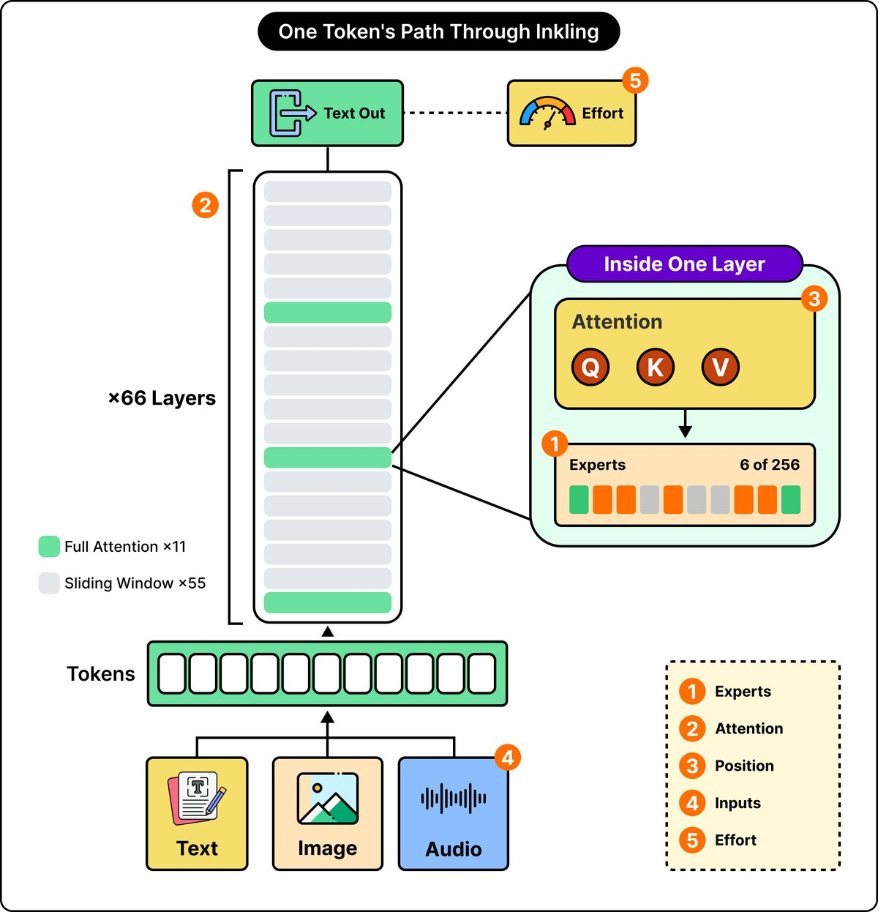
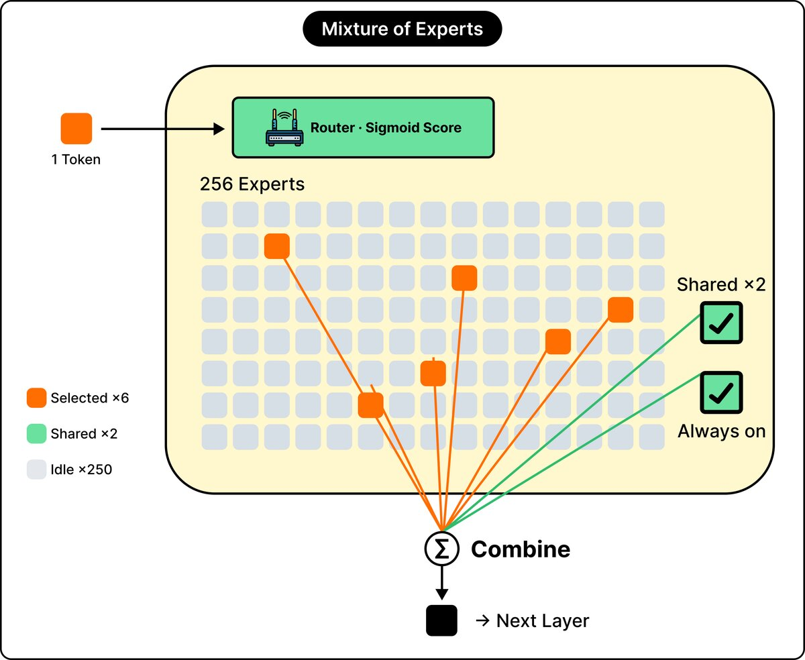
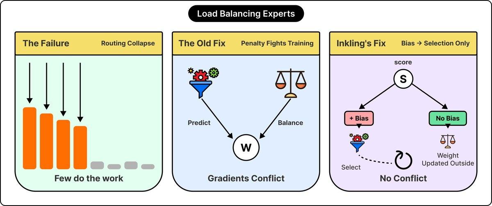
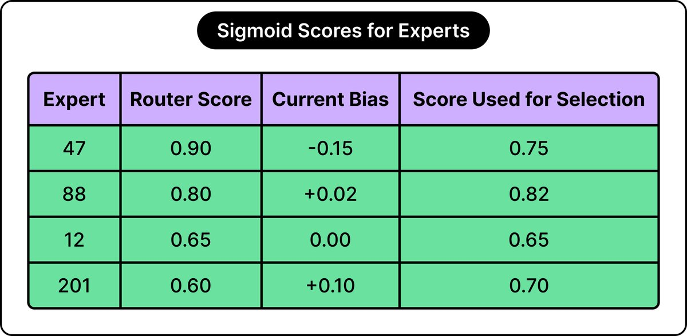
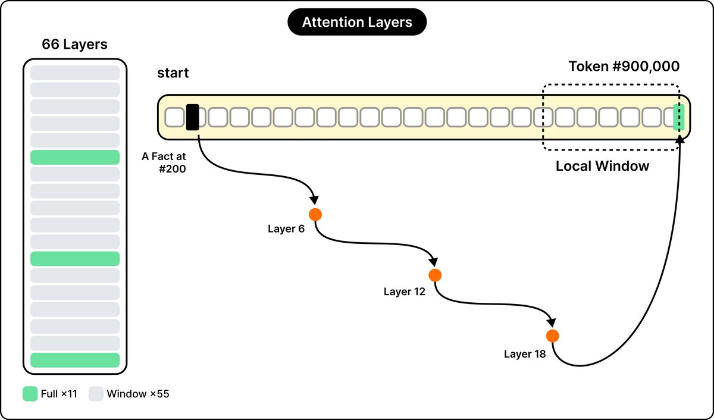
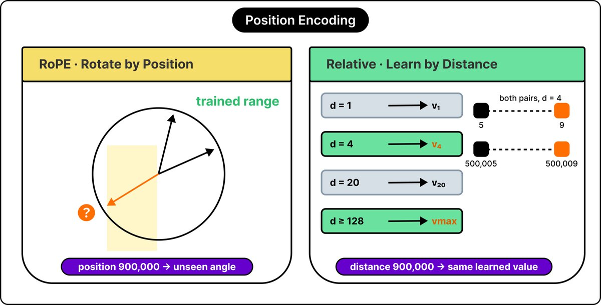
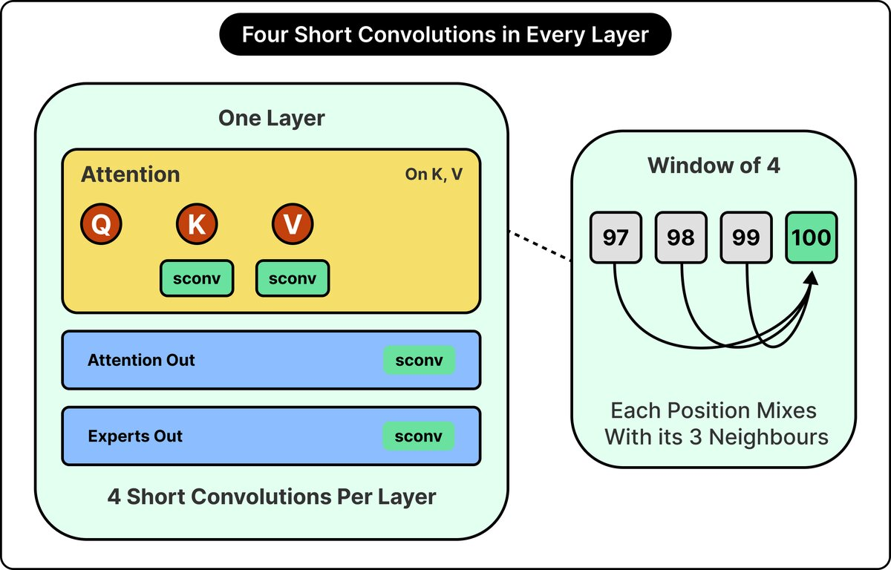
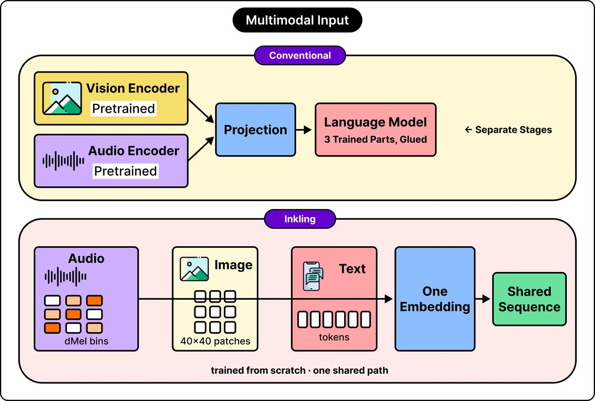
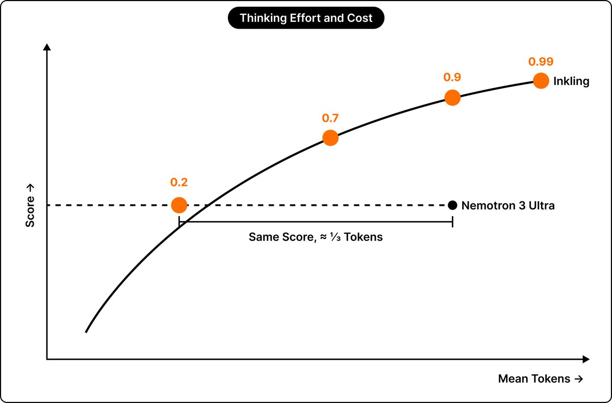

I — All converted ByteByteGo diagrams
The same nine diagrams and order as test H, converted to 1200px-wide, RGB, quality-85, non-progressive JPEGs.
I1 — One Token’s Path Through Inkling
Converted diagram 1 of 9.

I2 — Mixture of Experts
Converted diagram 2 of 9.

I3 — Load Balancing Experts
Converted diagram 3 of 9.

I4 — Sigmoid Scores for Experts
Converted diagram 4 of 9.

I5 — Attention Layers
Converted diagram 5 of 9.

I6 — Position Encoding
Converted diagram 6 of 9.

I7 — Four Short Convolutions in Every Layer
Converted diagram 7 of 9.

I8 — Multimodal Input
Converted diagram 8 of 9.

I9 — Thinking Effort and Cost
Converted diagram 9 of 9.
